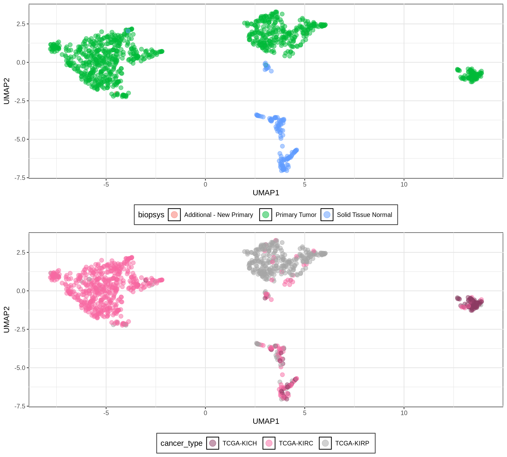
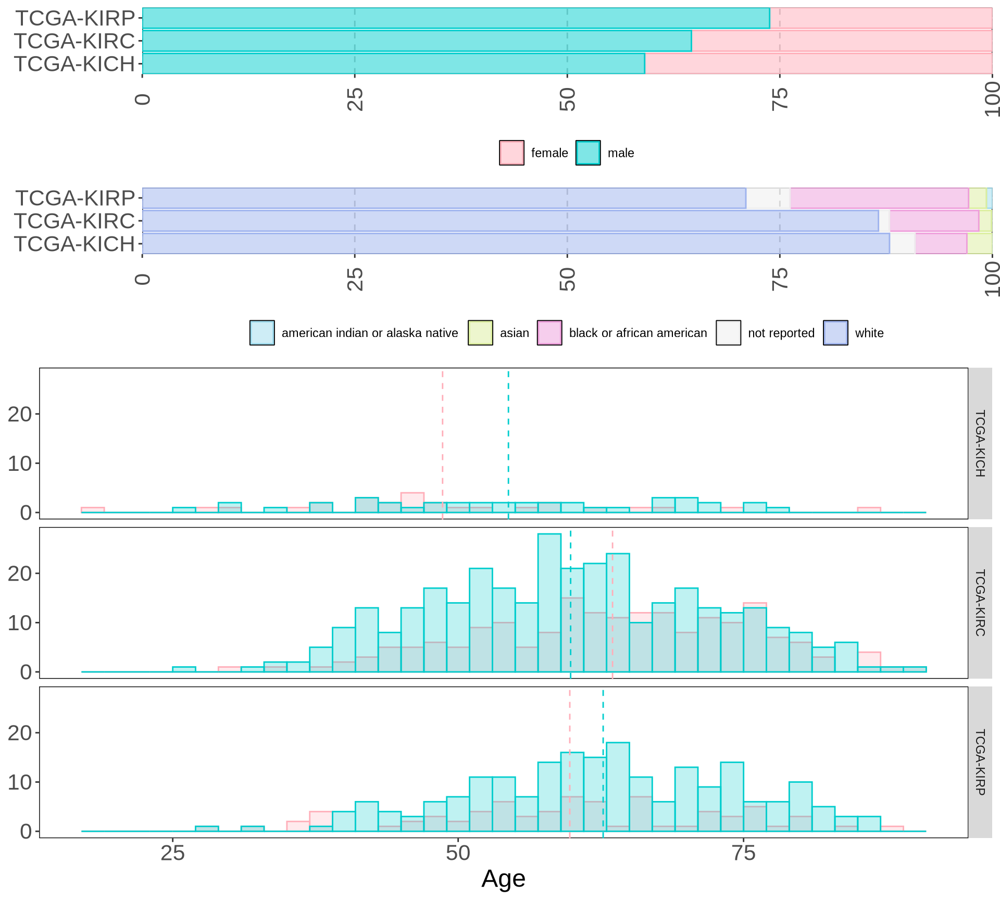
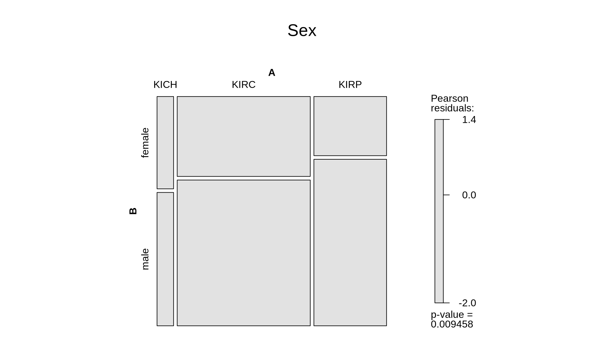
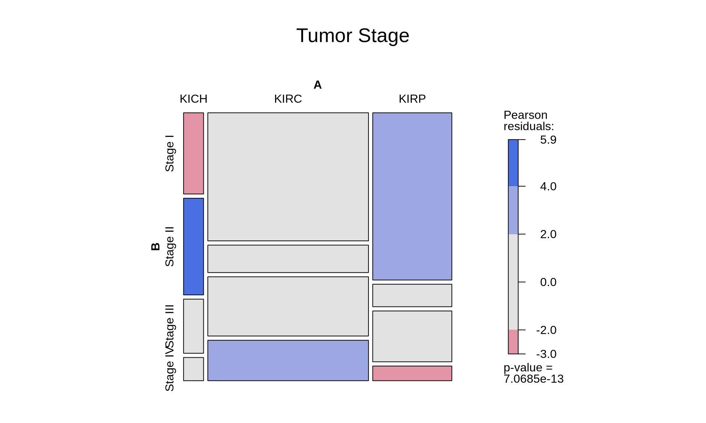
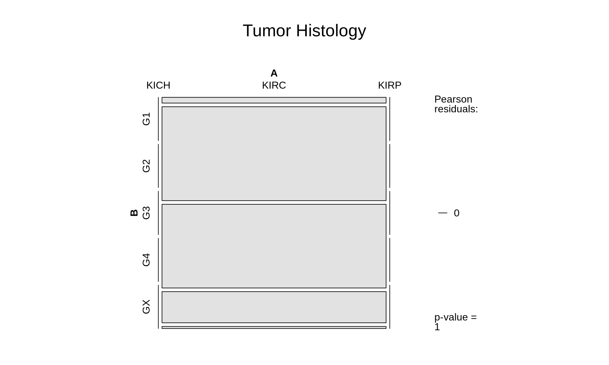
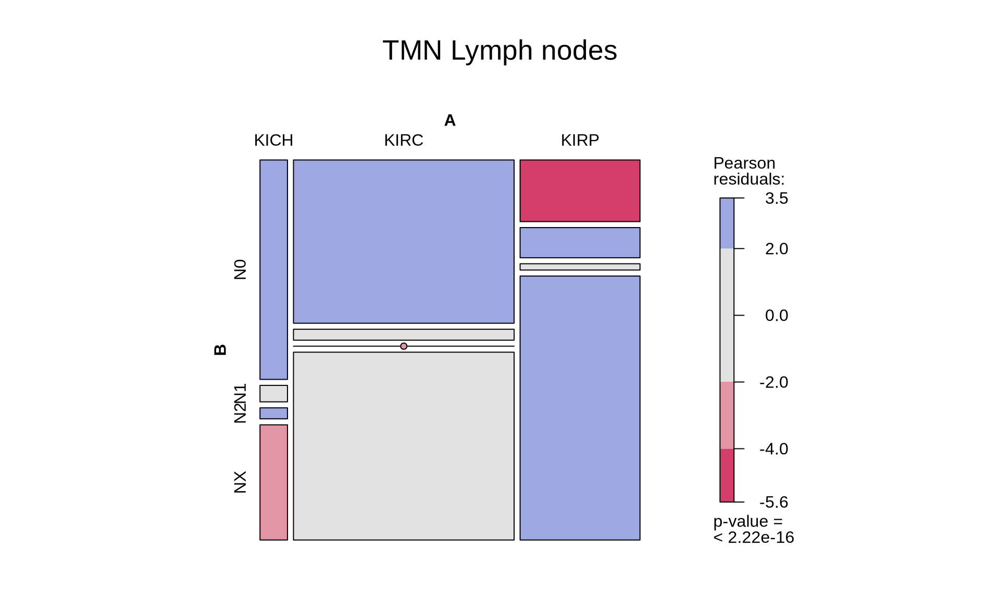

1 Data Exploration - Kidney Cancer
1.1 On this page
Biological insights and take-home messages are at the bottom of the page at Lesson Learnt: Section 1.4.
- Here we focus on samples from Kidney Cancers patients and their overall relationships.
- We then explore the association between each Kidney Cancer subtype and the major clinical covariates (e.g.: sex, disease status, cancer stage, clinical outcome).
1.2 Selection of Kidney samples
For the next sections, we will focus on kidney cancer. The choice is simply dictated by the abundance of samples which provide us a large playground to test different strategies for biomarker discovery, higher statistical power, and the existance of some Molecular Subtypes gene signatures that we can use as a benchmark and we can try to improve upon.
Let’s select and explore the samples available for Kidney tissue.
1.2.1 General Overview of the Dataset
To have a first overview of all the Kidney samples, we will plot a UMAP based on the gene expression of all the biopsys. A UMAP is an algorithm for dimension reduction based on manifold learning techniques and ideas from topological data analysis. The UMAP algorithm first constructs a weighted graph of the data in input (with N-dimensions), where the weight in the graph edge corresponds to how similar is a point (i.e.: sample) to the next one, and then projects this similarity graph into a bi-dimensional space. The 2-D projection is optimized to faithfully represents the relationships between the points in the N-dimensional space.
To build the UMAP, we focus on the 1,000 top most variable genes between the transcriptomics samples. This allows us to maximize similarities and differences between sample groups (if any).
The UMAP of all the samples divides the biopsys into 4 major clusters. Three clusters are localized on the upper part of the UMAP, and they loosely correspond to the three cancer subtypes in this cohort: kidney chromophobe (KICH), kidney renal papillary cell carcinoma (KIRP), and kidney renal clear cell carcinoma (KIRC). A further separation of the samples is visible on the y axis: biopsys from primary tumor are localized on top of the UMAP, while a second cluster of normal solid tissue are localized in the bottom of the UMAP, containing samples from non-diseased tissues of patients of all of the three cancer types.
Since we want to focus on discovering new biomarkers for the three kidney cancer types, we will remove the biopsys from normal solid tissue. Then, we test if there is a strong imbalance between the sex and age of the subjects in the three kidney cancer cohorts, and wheter we should balance the cohorts or not.
1.2.2 Cohort filtering
First, we retain only biopsys from “Primary Tumor”, removing “Solid Tissue Normal” and “Additional - New Primary” neoplasis. Then we look at the distribution of age, sex and ethnicity in the three different cancer cohorts.

We can immediatly see that the sampling biase towards patients with white background observed in all the cancer cohorts in Section 3.1 is reflected as well in kidney cancer cohorts. In terms of geneder demographics, males represents from 60% (KICH) to 74% (KIRP) of the cohorts. The histograms split by cancer types, however, show that the age distributions between the sexs int he different kidney cancer types are similar.
Since we may loose too many samples if we would generate balanced cohorts in terms of sex and race, we can keep the samples as is, and take Age, Sex and Race in account during the modeling phases downstream.
1.3 Contingency tables
As we saw previously TCGA provides rich clinical metadata for each patient. We can run some simple demographic statistics (chi-squared and Fisher exact tests) to see if any clinical covariate is significantly overrepresented in any of the three cancer types.
We can test if there is a significant difference of each observed clinical covariate across the three kidney cancer types. The null hypothesis here is that the distribution of each covariate in the the three cancer subtypes is the same.
1.3.1 Sex
There are 596 males and 291 females in the three kidney cancer cohorts after filtering. Despite the imbalance, the difference across cancer types is not significant.

1.3.2 Disease status
After filtering, the three kidney cancer types contains 563 subject that are now tumor free, and 190 subject that still have tumor. It seems that KIRP have significantly more patients that are now tumor free, while there are still significantly more patients with tumor for KIRC. The small sample size of KICH patients may skew these results, so this outcome should be interpreted with a pinch of salt.
1.3.3 Tumor Stages
The tumors across the patients were scored as: 458 Stage I, 105 Stage II, 189 Stage III and 105 Stage IV tumors.
This staging system is less granular than the TNM Staging System (that we look at into below), and it describe the tumro as follow:
- Stage 0 = Abnormal cells are present but have not spread to nearby tissue. Also called carcinoma in situ, or CIS. CIS is not cancer, but it may become cancer.
- Stage I, Stage II, and Stage III = Cancer is present. The higher the number, the larger the cancer tumor and the more it has spread into nearby tissues.
- Stage IV = The cancer has spread to distant parts of the body.
The higher the number, the more advanced the cancer is.
KIRC patients seem to have a higher number of Stage IV cancer, while KIRP patients have more STage I cancers. This can either be bias in the sampling of the cohort, or it could really indicate that KIRC cancer is more aggressive and fast progressing than KIRP.

1.3.4 Tumor Histology
Histological evaluation of the tumor cells essential to allow for accurate prognostication and tailored therapy, both surgical and adjuvant.
Histological grade have five categories:
- G1 = Well differentiated
- G2 = Moderately differentiated
- G3 = Poorly differentiated, Undifferentiated, Anaplastic
- G4 = Undifferentiated (high grade)
- GX = Grade cannot be assessed
Unfortunately, within the TCGA kidney cohorts, only KIRC biopsys where graded histologically. No histological grading was available for KICH and KIRP tumors.
For the KIRC tumors, 14 biopsys had G1 grade, 229 G2 grade, 204 had G3 grade, 76 G4 and 5 biopsys could not be graded (GX).

1.3.5 TMN, T: Main Tumor Pathology
Let’s look now into the TMN staging system. We have multiple staging and substaging that describes the tumor presence, dimension and invasion of adjacent tissues:
- TX = Primary tumor cannot be assessed.
- T0 = No evidence of primary tumor.
- T1 = Tumor ≤2 cm in greatest dimension.
- T2 = Tumor >2 cm but ≤4 cm.
- T3 = Tumor >4 cm or with subserosal invasion or involvement of the mesoappendix.
- T4 = Tumor perforates the peritoneum or directly invades other adjacent organs or structures (excluding direct mural extension to adjacent subserosa of adjacent bowel), e.g., abdominal wall and skeletal muscle.
The presence of 12 distinct substaging for TMN, and the relative small sample size across the cohort makes the outcome of this comparison difficult to judge. We could claim that KIRP seems to be enriched in lower tumor stages (T1a) and depleted in higher tumor stages (T2, T3a, T3b) than KIRC.
1.3.6 TMN, N: Lymph Nodes metastatis
The TMN tumor staging system provides as well a score for the lymph nodes:
- NX = Regional lymph nodes cannot be assessed.
- N0 = No regional lymph node metastasis.
- N1 = Regional lymph node metastasis <12 nodes.
- N2 = Large mesenteric masses (>2 cm) and/or extensive nodal deposits (≥12), especially those that encase the superior mesenteric vessels.
In the kidney cohort, lymph nodes of 506 patiens could not be scored (NX), 328 patients had a N0 score, 43 N1 and 7 had a N2 score. Lymph nodes of most patients with KIRP tumors could not be scored, they they were depleted in No and enriched in N1 if compared with patients with KIRC tumor.

1.3.7 Prognosis Outcome
Of the 887 petients with kidney tumor, 659 were alive at the time of the last check up, while 228 died. It appears that KIRC patients (48.7% dead) have worse prognosis than KIRP patients (17.9% dead), as observed in the previous comparisons. However, before drawing a formal conclusion, we should validate this observation at least in another independent cohort.
1.4 Lessons Learnt
So far, we have learnt:
- A UMAP is a handy way to summarize relationship between data:
- Projecting the transcriptomics data from kidney cancer biopsies with a UMAP showed that samples are grouped in three clusters, loosely corresponding to the three kidney cancer types (KICH, KIRC, KIRP).
- Some samples seem to be misclassified and clustered in the wrong cancer type group, or there are additional nuances that were not classified with bulk RNA-seq.
- Contingency tables reports on large clinical trends between the three cancer types:
- KIRC patients seems to have a higher chance to be tumor free than KIRP patients.
- Despite that, KIRC patients seems to be enriched for Stage IV tumors and depleted in Stage I tumors when compared to KIRP patients.
- Likewise, KIRP patients have more T1a tumor stages and less T2, T3a and T3b tumours when compared to KIRC.
- Unfortunately, KIRC patients seems to had a worse outcome than KIRP patients.
- The clinical outcome for KIRC patients seems to be more polarized: or the patient were cancer free at the end of the study, or the patient had more advanced tumour or a worse outcome when compared to KIRP patients. This overview suggest the possibility that if we could develop biomarkers for early detection of KIRC cancers we could improve the clinical outcome for these patients.
1.5 Session Information
Note
R version 4.3.2 (2023-10-31)
Platform: x86_64-conda-linux-gnu (64-bit)
Running under: openSUSE Tumbleweed
Matrix products: default
BLAS/LAPACK: /home/andrea/miniforge3/envs/moai/lib/libmkl_rt.so.2; LAPACK version 3.9.0
locale:
[1] LC_CTYPE=en_US.UTF-8 LC_NUMERIC=C
[3] LC_TIME=it_IT.UTF-8 LC_COLLATE=en_US.UTF-8
[5] LC_MONETARY=en_US.UTF-8 LC_MESSAGES=en_US.UTF-8
[7] LC_PAPER=en_US.UTF-8 LC_NAME=C
[9] LC_ADDRESS=C LC_TELEPHONE=C
[11] LC_MEASUREMENT=en_US.UTF-8 LC_IDENTIFICATION=C
time zone: Europe/Brussels
tzcode source: system (glibc)
attached base packages:
[1] grid stats graphics grDevices utils datasets methods
[8] base
other attached packages:
[1] vcd_1.4-13 umap_0.2.10.0 stringr_1.5.1 scales_1.3.0
[5] RColorBrewer_1.1-3 matrixStats_1.5.0 gridExtra_2.3 ggplot2_3.5.1
[9] forcats_1.0.0 edgeR_4.0.16 limma_3.58.1 DT_0.33
[13] dplyr_1.1.4 data.table_1.16.4 cowplot_1.1.3
loaded via a namespace (and not attached):
[1] sass_0.4.9 tidyr_1.3.1 generics_0.1.3
[4] stringi_1.8.4 lattice_0.22-6 digest_0.6.37
[7] magrittr_2.0.3 evaluate_1.0.3 fastmap_1.2.0
[10] jsonlite_1.8.9 Matrix_1.6-5 RSpectra_0.16-2
[13] purrr_1.0.2 crosstalk_1.2.1 jquerylib_0.1.4
[16] cli_3.6.3 rlang_1.1.5 munsell_0.5.1
[19] cachem_1.1.0 withr_3.0.2 yaml_2.3.10
[22] tools_4.3.2 colorspace_2.1-1 locfit_1.5-9.10
[25] BiocGenerics_0.48.1 reticulate_1.40.0 vctrs_0.6.5
[28] R6_2.5.1 png_0.1-8 zoo_1.8-12
[31] lifecycle_1.0.4 htmlwidgets_1.6.4 MASS_7.3-60.0.1
[34] pkgconfig_2.0.3 bslib_0.8.0 pillar_1.10.1
[37] gtable_0.3.6 glue_1.8.0 Rcpp_1.0.14
[40] statmod_1.5.0 xfun_0.50 tibble_3.2.1
[43] lmtest_0.9-40 tidyselect_1.2.1 knitr_1.49
[46] farver_2.1.2 htmltools_0.5.8.1 labeling_0.4.3
[49] rmarkdown_2.29 compiler_4.3.2 askpass_1.2.1
[52] openssl_2.3.1